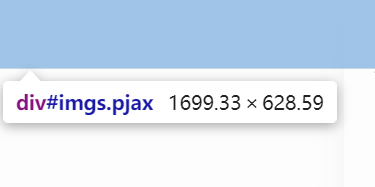
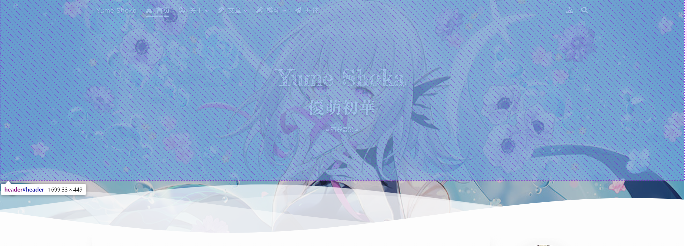
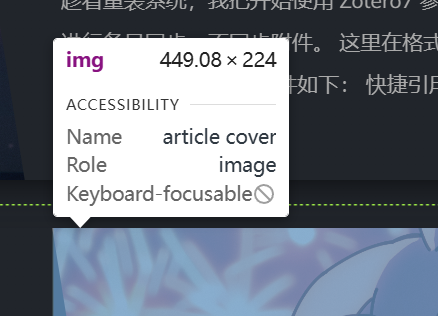
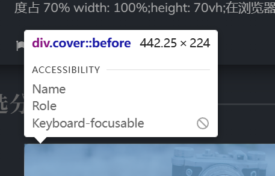

强迫症患者请自助
# 封面图
首先，博主的显示器是 2560*1600，放大 150%
扒源代码易得封面轮播图的长度占浏览器窗口的 100%，高度占 70%
width: 100%; | |
height: 70vh; |
在浏览器按 F12 运行以下代码，可知浏览器窗口的长宽：
console.log(window.innerWidth); | |
console.log(window.innerHeight); |
此处打印的是视口的宽度和高度，不包括浏览器的工具栏或书签栏。
打印结果，我的浏览器视口为 1707*898，长度放大 1.5 倍正好与显示器分辨率 2560 吻合。
直接看代码显示比例，其中 628.59==898*0.7 ，长度的损失是因为侧边拖动条：

那么我们的图片长宽比即为 1700:629 = 2560:947 = 1920:710 ，按这个比例裁剪吧
更近一步的话，可以再将白色波浪的遮挡考虑进来
上方 header 的高度为 50vh，白色波浪的 class="waves" 的高度为 15vh。考虑动态变化，博主认为按时间平均的情况下，40% 的 waves 不会遮挡，那么 (50+15*0.4)÷70=0.8，即从顶部算起，图片高度的 80% 不会被遮挡。据此来裁剪图片到满意的位置。

# 文章 cover & 分类图
- 文章封面

如图，图片长宽比为 449.08:224 = 2560:1277
- 精选分类

如图，图片长宽比为 442.25:224 = 2560:1297